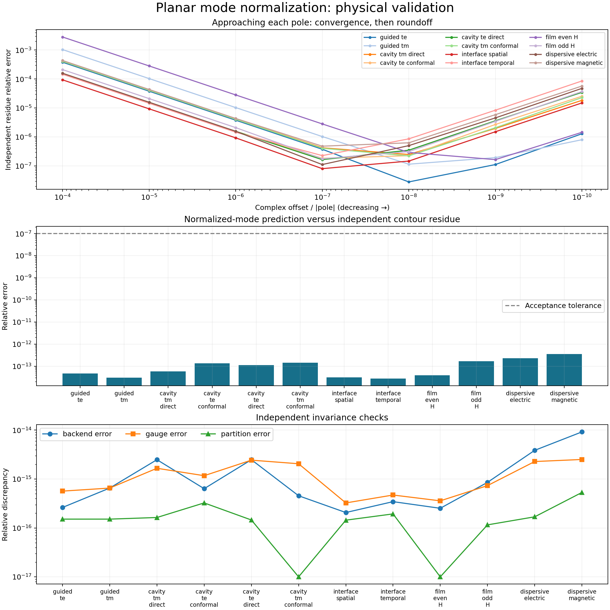

The scalar Green convention is L G=delta, with a positive unit flux jump and physical k0 or beta in cm⁻¹. This is one planar Fourier component, not a finite 3D mode volume.
At normal incidence with nondispersive exteriors, the outgoing electric and magnetic contributions cancel. Core's finite-layer Maxwell overlap already contains the equivalent scalar boundary contribution. TE/TM analytic cavity regressions check this identity and reject double counting. The scalar formula uses analytic endpoint derivatives; no infinite exterior quadrature is performed.

Twelve accepted modal points include guided TE/TM, both spectral formulations and polarizations, both complex interface-plasmon cases, both film modes and electric/magnetic dispersion. A separately constructed matched-wave Green function provides unit-jump and contour residues. Complex gauge changes and independent left/right boundary displacements preserve predictions. Negative controls omit scalar boundary or dispersion terms, conjugate a bilinear residue factor or use the wrong pole variable; each is detected. An unavailable control factor is recorded as such, not assigned a fabricated error.
{
"residue_error": 3.5257113276446777e-13,
"contour_error": 3.059445212977508e-13,
"backend_error": 9.198311139588564e-15,
"gauge_error": 2.5134270206671216e-15,
"partition_error": 5.31783777425365e-16
}
Normalized fields use the declared scalar pole convention, which differs by explicit factors from the legacy Maxwell-integral convention. Exterior branches and radiation provenance are retained. No exceptional-point certification, mode volume, Purcell factor or complete modal expansion is claimed.
Raw files: case errors and controls, convergence, bilinear contributions, physical coordinates, models and settings.
Reproduce from lamina-mode: cargo run --release --locked --example pole_normalization -- --suite full --output NEW_DIRECTORY, then python scripts/plot_pole_normalization.py NEW_DIRECTORY.